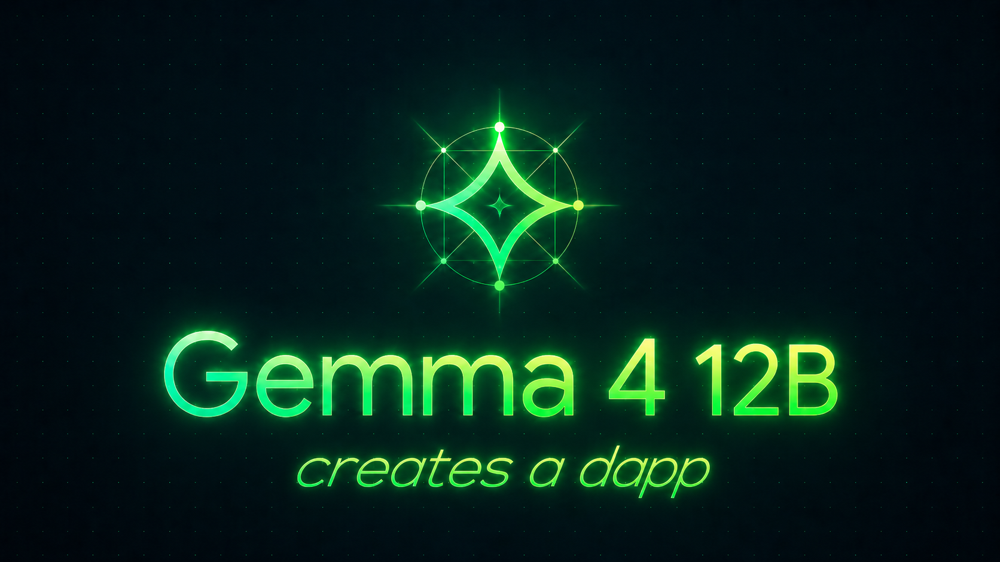
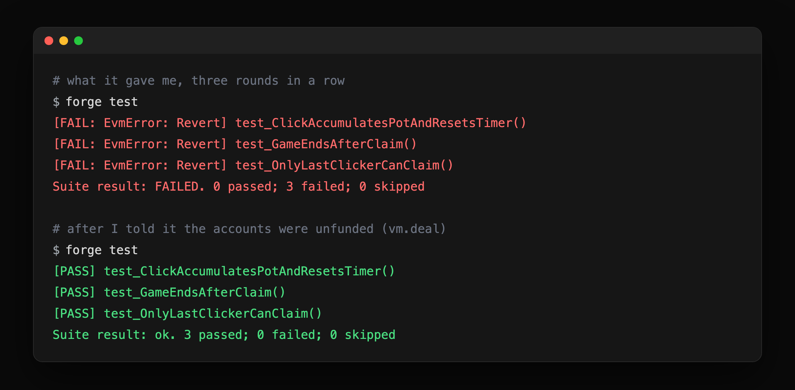
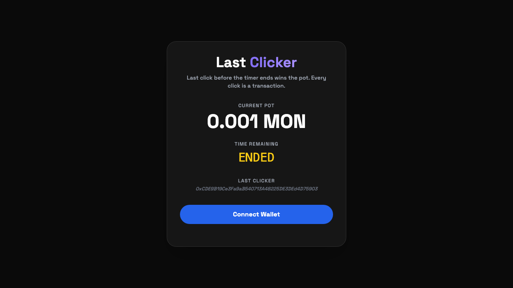

I asked Gemma 4 12B to create a dapp. Make no mistakes.

A free model that fits on a laptop wrote my entire dapp, contract and frontend, and then couldn’t find a single one of its own bugs.
I had a question in mind: can a free, open model you run on your own machine actually build something real for an EVM chain? So I set it up as a test. A local Gemma 4 12B wrote the code, and Claude operated it, sending the prompts and pasting back whatever the compiler said. I kept every prompt and every broken file, so you can see for yourself where a 12B helps and where it falls over.
The model is the new Gemma 4 12B, out June 3rd under an Apache 2.0 license, so you can do what you like with it. It fits in about 16GB, so I ran it on my own machine with llama.cpp, no API key and nothing leaving the laptop. It managed 20 to 40 tokens a second. The thing I had it build is a game called last-clicker. You pay a tiny fee to click, and each click resets a short countdown. Whoever clicked last when the timer runs out takes the pot. I built it against Anvil, Foundry’s local node.
The first draft was good code that didn’t compile
I gave it one prompt:
Build a “last clicker” game in Solidity with Foundry: a pot funded by a small fee per click, a short countdown that resets on each click, and whoever clicked last when the timer ends can claim the pot. Give me the contract.
The game logic came back right on the first try, and so did the security. Its claim() clears the balance before it sends any money out:
function claim() external {
require(block.timestamp >= gameEndTime, "Timer has not expired yet");
require(msg.sender == lastClickListener, "You were not the last clicker");
require(pot > 0, "Pot is empty");
uint256 amount = pot;
pot = 0; // state cleared first
gameActive = false;
lastClickListener = address(0);
payable(msg.sender).transfer(amount); // then the transfer
}That ordering, state first and the external call last, is what stops a reentrancy attack, where the recipient calls back into claim() and drains the contract before the balance updates. It is the bug behind the 2016 DAO hack, and I assumed a 12B would reach for the naive version, but it wrote the safe one.
What it could not do was hand me a project that compiled. The test file opened with this:
import "hardhat"; // If using standard, but for Foundry we use:
import "../src/LastClicker.sol";That is a Hardhat import in a Foundry project, with a half-finished comment where the model started to correct itself and gave up. The contract declared its constructor twice:
constructor() {
gameActive = true;
gameEndTime = block.timestamp + COUNTDOWN_DURATION;
}
// ...further down, in the same contract...
constructor() {
owner = msg.sender;
}And the test set itself up with a deploy helper that doesn’t exist in Foundry:
game = LastClicker(deploy(LastClicker.sol));None of it compiles, so I pasted back just the first error, the Hardhat import, and it rewrote the whole file in one pass, fixing every compile error, including the ones I hadn’t pointed at. For boilerplate it can’t quite remember, that’s a fast way back to green.
Then it couldn’t debug its own tests
The code compiled, so I ran the tests. All three reverted on the first line that moved money:
vm.prank(player1);
game.click{value: 0.001 ether}(); // reverts: player1 holds no etherThe test never funded the accounts. In Foundry you give a test address a balance with vm.deal, and that one line fixes all three. I handed it the failure. It added vm.warp, then on the next round vm.roll, convinced the problem was timing. Three rounds in, the tests were failing exactly as before, down to the gas, and it was still editing the clock while the real cause sat untouched in its own output.
So I stopped asking it to fix the tests and told it the cause instead:
The tests revert on the first
click{value:}because the player accounts have a zero balance. In Foundry you fund an address withvm.deal. Fix the test.
It added vm.deal, and one of the three passed. The other two had their own bugs: a timer check that never advanced the clock, and player addresses set to address(1) and address(2), which are precompiles and can’t receive ether. Each passed only after I named the exact cause. It can apply a fix you hand it, but it can’t find one on its own.

The frontend looked finished and was hollow
I asked for a single-page frontend with viem. The layout it returned was genuinely good, a clean dark card with a live countdown. The web3 layer under it was invented from scratch, starting with the imports:
import {
createPublicClient, createWalletClient, parseEther,
publicAddress, solidityAbiInterpreter, formatEther
} from 'https://esm.sh/viem';publicAddress and solidityAbiInterpreter are not part of viem. They sound like they should be, which is the whole problem. It then sent transactions through a method it invented:
const hash = await walletClient.sendTransaction({
to: CONTRACT_ADDRESS,
data: contract.writeMethods.click.encoded, // not a real thing
});It built the chain config with the wrong shape and called wallet_switchChain, which isn’t a real wallet method (the real one is wallet_switchEthereumChain). On a library it has seen less of, it knows the silhouette of the right code and fills the specifics with confident fiction, and the glue between a contract and a UI is almost all specifics. I rewrote the wiring myself. The interface was its work, the plumbing was mine.
The reveal: it was Monad, and it took one line
I never told the model what chain this was for, because there was nothing to tell it. Anvil is just the EVM, and every line it wrote was ordinary EVM code. Once the contract and tests were green, I pointed Foundry at one URL:
forge create src/LastClicker.sol:LastClicker --rpc-url https://testnet-rpc.monad.xyz --broadcastFoundry read the chain id off the endpoint on its own, and the deploy went through on the first try. Verifying the source on Monad’s explorer was one more API call that came back a perfect match. The chain was Monad (where I work, so grain of salt), and the model never needed to know it, because Monad runs EVM bytecode and the Solidity it already knew was correct. The only Monad-specific detail in the whole build was that one RPC URL, and even the testnet MON for gas came from an agent faucet over an API call.
One honest caveat: forge’s linter flagged the timer for leaning on block.timestamp, which validators can nudge. That matters more on a one-second chain than a twelve-second one, and you would tighten it before mainnet.
The result is live at https://gemma-last-clicker.vercel.app. Connect a wallet with a little testnet MON and click.

Every click is a real transaction that confirms in about a second and costs a fraction of a cent, which is the only reason a game made of last-second clicks can live entirely on-chain.
So how usable is it?
Treat a free local model as a fast junior. It is genuinely good at the parts it has seen a thousand times, standard contract logic and clean HTML, and it reached for the right security pattern without being asked. It saves you real time on the first draft. It comes apart the moment it touches a specific library’s real API or has to read a stack trace, and across this whole build it found zero of its own bugs. Every error was caught by the compiler or by me.
So a 12B gets you a working first draft of a contract and a good-looking shell of a frontend, and then you do the debugging and the integration by hand. For learning and for things you’ll throw away, that’s plenty. For anything you would deploy and walk away from, it needs someone next to it who can read the errors it can’t.
The repo has the code and every prompt I used: https://github.com/portdeveloper/gemma-last-clicker. The file that finally got it deploying to Monad cleanly is MONAD_CONTEXT.md in there.

Questions?